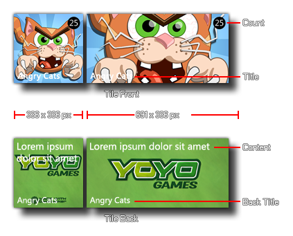
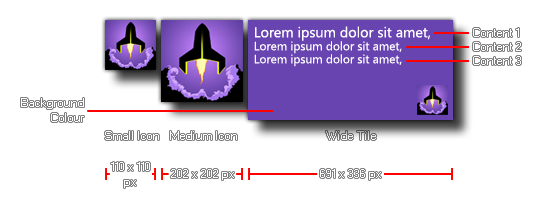
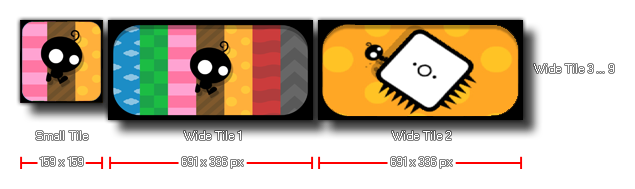

Windows 8 Phone
如下函数是专门提供给windows 8电话平台的。
虽然Windows 8的手机操作系统看起来非常类似于标准的Windows 8桌面版，即时瓷砖和其他功能多一点限制。目前GameMaker:Studio 允许你使用特殊函数来修改你的游戏与即时瓷砖。这些函数被分成三组（可用的三种不同类型的瓷砖）。除了特定的瓷砖类型外，还有两个是适用于所有类型：
NOTE : 你的游戏的瓷砖类型（和它的初始值），可以从全局游戏设置 Global Game
Settings.
NOTE : 与其他移动设备目标平台一样，Windows Phone设备上的后退按钮，可以允许使用的
vk_backspace 键盘检查。
翻转瓷砖
一个翻转瓷砖是一种具有背面和正面图片和它们之间随着时间的推移的瓷砖开关（或“翻转”）。
以下函数可以帮助你控制自己的视觉方面：
标志性瓷砖
 标志性的瓷砖是一个所有格式使用的是“标志性”的形象。此图片将占据整个瓷砖的中小型瓷砖，但会减少到一个小图标，选择的背景颜色为宽瓷砖（通常与一些文字相关到瓷砖二）。
下面的函数可以用来设置这些属性：
循环瓷砖
循环瓷砖是一个使用了大量的宽瓷砖格式的图像和它们之间的循环。如果即时瓷砖不是宽瓷砖，那么只有一个小的图像将显示 ：
下面的函数可以用来设置这些属性
- 碧绿的湖 -
Back : Windows 8